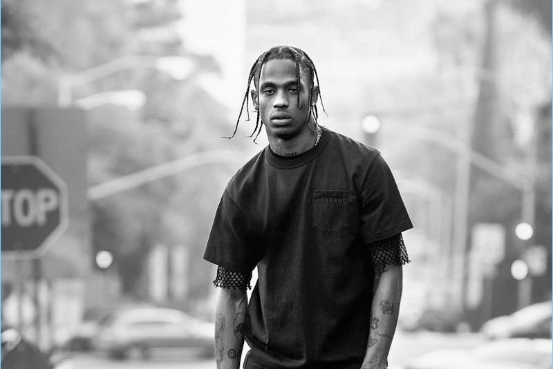
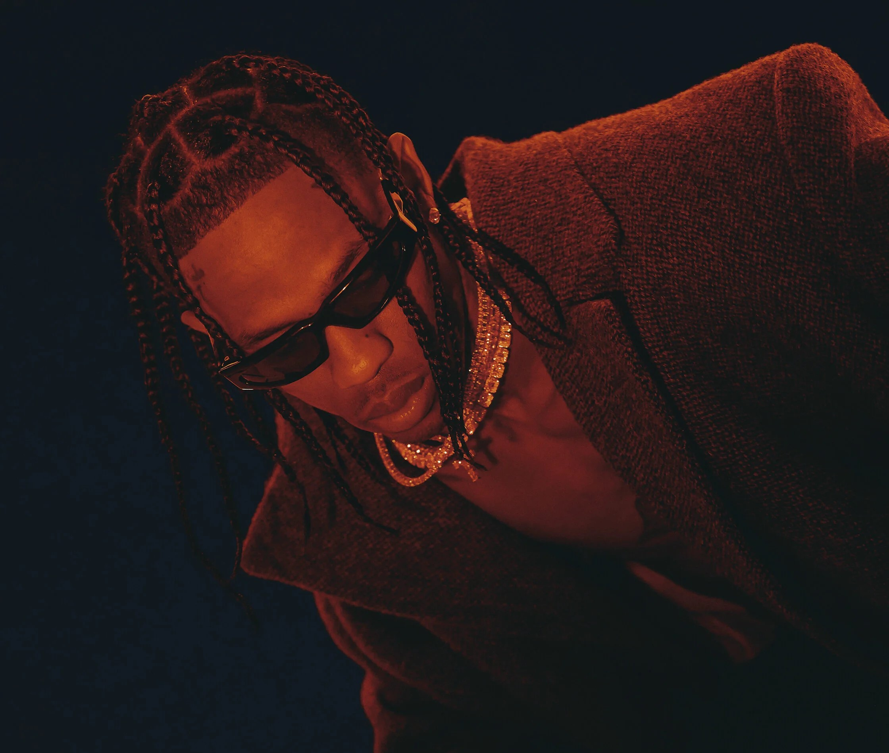
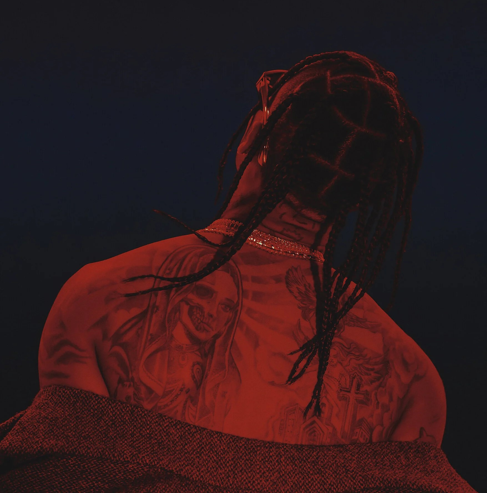

Travis Scott
You cant buy vision, and you cant buy aestetic.

Early Beginnings
Jacques Bermon Webster II was born on April 30, 1991, in Houston, Texas, spending his early years
in South Park where poverty and street life shaped his drive to succeed. Music ran in his blood,
his father was a soul musician and his grandfather a jazz composer. After briefly attending college,
Scott dropped out and bought a one-way ticket to New York City, pursuing his dream of becoming
a rapper despite his parents' disapproval.

The Struggle
Scott's early career was marked by struggle as he slept on couches in New York, hustling for studio
time while his parents cut him off financially. His move to Los Angeles proved pivotal when his
track
"Lights (Love Sick)" caught T.I.'s attention, leading to a record deal with Grand Hustle. In 2012,
Kanye West signed him to GOOD Music, and his 2013 mixtape "Owl Pharaoh" established him
as a boundary-pushing innovator blending trap with indie influences.

Ascent to stardom
Scott's 2015 debut "Rodeo" reached number three on the Billboard 200, while 2016's "Birds in the
Trap Sing McKnight" gave him his first number-one album. The game-changer came in 2018 with
"Astroworld," which produced his first chart-topping single "Sicko Mode" and accumulated over
10 billion streams. Beyond music, Scott became a cultural phenomenon with Nike collaborations
, a groundbreaking Fortnite concert, and luxury brand partnerships.

Lasting Impact
After a five-year hiatus following the 2021 Astroworld Festival tragedy, Scott returned in 2023 with
"Utopia," debuting at number one with hits like "Meltdown" and "Fein." Today, he stands as one of
hip-hop's most influential figures with five number-one Billboard hits and ten Grammy nominations.
His innovative blend of trap, rock, and psychedelia has inspired a new generation of artists and
left
an indelible mark on contemporary music culture.
Circus Maximus Tour
Date
City
Venue
Tickets
Featured Albums
- Astro World
- Utopia
- Rodeo
- Birds in the trap sing mcknight